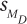
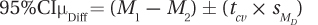

9.3 Interpreting the Paired-Samples t Test
304
Interpreting a paired-samples t test starts by addressing the same questions that were used in interpreting the single-sample t test and the independent-samples t test:
Was the null hypothesis rejected?
How big is the effect?
How wide is the confidence interval?
And the interpretation ends the same way as well, with a written statement that covers four points:
What was the study about?
What were its main results?
What do these results mean?
Are there specific suggestions for future research?
Before Dr. Keim starts the interpretation, let’s review her study on the effect of humidity on perceived temperature. She used six participants in a within-subjects design, where each person was tested twice in a 76° room, once at low humidity and once at high humidity. The mean perceived temperature in the low-humidity condition was 75.00°F (s = 4.34°F) and 82.50°F (s = 4.93°F) in the high-humidity condition. The mean difference score was 7.50 (sD = 2.07°F). For a two-tailed test with α = .05 and df = 5, tcv was ±2.571°F. Dr. Keim calculated  = 0.85°F and t = 8.82°F.
Was the Null Hypothesis Rejected?
This first interpretation question can be answered by plugging the observed value of the test statistic, t = 8.82, into the decision rule Dr. Keim formulated in Step 4:
Is 8.82 ≤ –2.571 or 8.82 ≥ 2.571?
Or, is –2.571 < 8.82 < 2.571?
The first statement is true because 8.82 is greater than or equal to 2.571. This can be seen in Figure 9.5, where it is clear that the value of the test statistic falls in the rare zone. Dr. Keim has rejected the null hypothesis.
Rejecting the null hypothesis that the two population means are the same leads to accepting the alternative hypothesis that the two population means are different. Dr. Keim can say that a statistically significant difference exists between the perceived temperature in low humidity vs. high humidity.
305
The Direction of the Difference
Reporting that there is a difference is true, but it is not very useful. The logical follow-up question is, “What is the direction of the difference?” By examining the two sample means, 75.00° for the low-humidity condition vs. 82.50° for the high-humidity condition, Dr. Keim can conclude that 76° feels significantly hotter with high humidity than with low humidity.
A researcher only needs to worry about the direction of the difference when the null hypothesis is rejected. If Dr. Keim had failed to reject the null hypothesis, then there would not have been enough evidence to conclude that a difference exists between the two means, so there would have been no reason to consider the direction of the difference.
APA Format
Reporting the results in APA format for the humidity results, Dr. Keim would write
t (5) = 8.82, p < .05
For a t-test, APA format contains five pieces of information: (1) what test was done, (2) the number of cases, (3) the value of the test statistic, (4) the alpha level chosen, and (5) whether the null hypothesis was rejected.
The initial t says that this was a t test.
The number in parentheses, 5, is the degrees of freedom. By adding 1 to the number in the parentheses (i.e., 5 + 1 = 6), one can determine the number of pairs of cases.
The number after the equals sign, 8.82, gives the value of the test statistic.
The final value, .05, shows that there is a 5% chance of making a Type I error because alpha was set at .05.
p < .05 is how APA says that the null hypothesis has been rejected. It means that the results are rare, they happen less than 5% of the time, when the null hypothesis is true. (If alpha had been set at something other than .05, say .10, then write p < .10 instead.)
Cohen’s d and r2 for the Paired-Samples t Test
In the last two chapters, for the single-sample t test and the independent-samples t test, we calculated Cohen’s d and r2 in order to quantify how much impact the explanatory variable had on the outcome variable. It is possible to calculate Cohen’s d and r2 for a paired-samples t test, but doing so is not advisable.
The reason that these effect sizes are inappropriate for a paired-samples t test is that they measure more than just the impact of the explanatory variable on the dependent variable. Cohen’s d and r2 for a paired-samples t test also include the effect of individual differences. As a result, they overestimate the size of the effect of the independent variable on the dependent variable. For example, r2 would be 94% for the humidity data if it were calculated. If true, it would mean that humidity status explains 94% of the variability in perceived temperature. That would be a huge effect for the explanatory variable of humidity level. Unfortunately, it is not true. Here’s why.
306
Look at Table 9.1, which presents the data for each case in each of the two conditions. Notice that there’s variability within a condition: not everyone perceives the temperature the same way. As everyone in a condition receives the same treatment, the variability within a condition results from individual differences among the participants. Look at case 6 who perceived the low-humidity condition as the coldest, 68°. Case 6 also gives the lowest rating of the temperature in the high-humidity condition. Case 6 differs from the other individuals in this study in that he or she always feels cold. Case 2, in contrast, differs in the perception of temperature, feeling the warmest in both conditions.
The type of participant, cold-sensitive or heat-sensitive, has a large effect on the temperature the environment is perceived to be. Whether a person is cold-sensitive or heat-sensitive is an individual differences variable. When r2 or Cohen’s d is calculated for a paired-samples t test, they mix in the impact of these individual differences on temperature with the impact of the different conditions (high vs. low humidity) on temperature. This means that they give an inflated effect size and are not appropriate to estimate effect size for a paired-samples t test.
So, how does a researcher measure effect size for a paired-samples t test? One way is to calculate the confidence interval for the difference between population means and then use professional expertise—and common sense—to translate it into an effect size. Another approach, not possible until Chapter 12, is to use a test called the repeated-measures ANOVA instead of a paired-samples t test. The repeated-measures ANOVA, unlike the paired-samples t test, separates out the impact of individual differences from the effect of the explanatory variable, allowing the effect of the explanatory variable alone to be assessed.
How Wide Is the Confidence Interval and How Big Is the Effect?
The confidence interval for the difference between population means reveals how small or how large the difference between the population means might be. For the humidity data set, the confidence interval will tell, at a population level, how much hotter the temperature is perceived when the humidity rises. A confidence interval of any percentage could be calculated, but the most common is the 95% confidence interval. Equation 9.5 gives the formula for the 95% confidence interval for the difference between population means for the paired-samples t test.
Equation 9.5 Formula for the 95% Confidence Interval for the Difference Between Population Means for a Paired-Samples t Test

where 95%CIµDiff = the 95% confidence interval for the
difference between population means for a paired-samples t test
M1 = the mean of one sample
M2 = the mean of the other sample
tcv = the critical value of t, two-tailed, α = .05, df = N – 1
= the standard error of the mean difference for the difference scores (Equation 9.3)
307
Applying this to her humidity data, Dr. Keim would calculate the 95% confidence interval as follows:
95%CIµDiff = (82.50 – 75.00) ± (2.571 × 0.85)
= 7.5000 ± 2.1854
= from 5.3146 to 9.6854
= [5.31, 9.69]
Her confidence interval ranges from a lower limit of 5.31° to an upper limit of 9.69°. To make the interpretation more accessible, Dr. Keim has rounded each end to a whole number, making the confidence interval range from 5 to 10 degrees. In interpreting this confidence interval, Dr. Keim will pay attention to three points: (1) whether the confidence interval captures zero, (2) how close it comes to zero, and (3) how wide it is.
If a confidence interval captures zero, this means it is possible that the difference between the means of the populations is zero. When such happens, it is plausible that the null hypothesis is true. (This assumes that the confidence interval and the alpha level of the hypothesis test are synchronized.)
How close the confidence interval comes to zero provides information about the effect size in the larger population. If both ends of the confidence interval are close to zero, then the effect size is probably small. If both ends of the confidence interval are far from zero, then the effect size is probably large. If one end of the confidence interval is close to zero and the other end is far away, then the researcher will be left unsure of how strong or weak the effect actually is in the population.
The width of the confidence interval provides information about how precisely the effect can be specified in the population. Narrower confidence intervals are preferred because they give a more precise sense of the size of the effect in the population. If the confidence interval is wide, the researcher will usually recommend replicating with a larger sample size in order to determine the parameter value more precisely.
For the humidity study, the confidence interval, from 5 to 10 degrees, does not capture zero. This is to be expected as the null hypothesis was rejected. The confidence interval reiterates what is already known—it is unlikely, in the larger population, that there is no difference in how 76° is perceived in low humidity vs. how it is perceived in high humidity. Instead, in the population, the high-humidity condition is probably perceived as 5–10 degrees hotter, on average, than the same temperature at low humidity.
The second step, determining how small and how large the effect may be, takes more thought and expertise for the paired-samples t test than it did for the independent-samples t test. With an independent-samples t test, the researcher could calculate Cohen’s d or r2 and rely on Cohen’s standards for small, medium, and large effects. The end of the confidence interval closer to zero (the lower limit) is 5 and the end farther away (the upper limit) is 10. In the larger population, will people perceive the temperature to be a lot hotter or a little hotter if they perceive 76° in conditions of high humidity as 5 degrees hotter than in low humidity? Dr. Keim believes this to be a meaningful effect. She reasons that, on a summer day, there is a noticeable difference in comfort level between being in an air-conditioned room at 71° and one at 76°, so a 5-degree difference is a meaningful one. If a 5-degree difference is meaningful, then a 10-degree difference is even more so. In understanding what a 10-degree difference means, Dr. Keim thinks of how a 76° summer day feels pleasant and an 86° day feels hot.
308
Finally, she uses Equation 7.5 to calculate the width of the confidence interval. To avoid rounding error, she uses the real limits of the confidence interval, 5.31 to 9.69, not her rounded version of 5 to 10:
CIW = CIUL – CILL
= 9.69 – 5.31
= 4.38
The confidence interval is 4.38° wide. This seems sufficiently narrow to Dr. Keim. She would like to replicate the study in order to make sure the same effect is observed again, and she would like to increase the sample size in order to have a better sample, but she feels no need to replicate with a larger sample size in order to narrow the confidence interval. Given that both a 5-degree difference and a 10-degree difference seem meaningful and that the confidence interval is narrow, Dr. Keim is inclined to focus on the observed difference of 7.50 degrees in her interpretation.
Putting It All Together
Here is Dr. Keim’s four-point interpretation in which she states: (1) what the study was about; (2) the main results; (3) what the results mean; and (4) her suggestions for future research. This interpretation is a little longer than previous ones. It takes Dr. Keim two paragraphs to say all that she wants to.
The impact of humidity on perceived temperature was examined. Using a within-subjects design, six participants judged the temperature after being in a 76° room under conditions of low humidity and high humidity. In the low-humidity condition, they judged the temperature fairly accurately (M = 75.00°F), but they judged it as hotter (M = 82.50°F) under conditions of high humidity. This 7.50°F difference was statistically significant [t (5) = 8.82°F, p < .05]. Humidity appears to make people feel hotter. According to this study, people feel almost 8 degrees hotter under conditions of high humidity. This is a noticeable increase in perceived temperature and can move a person from feeling comfortable to being uncomfortable.
There were several limitations to this study that can be rectified in future research. All participants were college students in the United States, people who have experience with heated and cooled environments. It would be interesting to see if the same effect were observed among people with less control over their indoor environments. A second limitation is that only one temperature, 76°, was tested. The effect of humidity on perceived temperature should be observed at both higher and lower temperatures. Finally, there were only six participants in this study. Replicating the study would increase confidence in the robustness of the finding that humidity level affects the perception of temperature.
Worked Example 9.2
For more practice with interpretation, let’s return to the study where Dr. Althof followed patients with depression for six months following treatment. At the end of treatment, the mean depression level for the 16 participants was 14.00, and six months later it had climbed to 15.00. The mean difference score was 1.00 (sD = 2.31). Dr. Althof had nondirectional hypotheses and a 5% chance of making a Type I error. tcv was 2.131, was calculated to be 0.58, and t was 1.72.
309
Was the null hypothesis rejected? The first step in interpretation is to determine if the null hypothesis is rejected. To do so, Dr. Althof substitutes the observed value of t, 1.72, into the decision rule he had generated in Step 4:
Is 1.72 ≤ –2.131 or 1.72 ≥ 2.131?
Or, is –2.131 < 1.72 < 2.131?
The second statement, is true: 1.72 falls between –2.131 and 2.131. Look at Figure 9.6, where it is clear that the value of the test statistic falls in the common zone. Dr. Althof has failed to reject the null hypothesis. There is not enough evidence to conclude that depression level changes, in either a positive or negative direction, in the six months after the end of psychodynamic therapy. In APA format, the results would be written as
t (15) = 1.72, p > .05
Remember, “p > .05” signifies that the result (t = 1.72) is an expected, or common, occurrence when the null hypothesis is true. It means that the null hypothesis was not rejected.
This failure to reject the null hypothesis can be taken as good news. Dr. Althof thinks of it as lack of evidence that relapse to depression occurs within six months of ending psychodynamic treatment for depression. The effectiveness of this treatment seems fairly long-lasting.
How wide is the confidence interval? How big is the effect? The second step in interpretation for a paired-samples t test is to use the confidence interval to evaluate the size of the effect. Dr. Althof used Equation 9.5 to calculate the confidence interval:

= (15.00 – 14.00) ± (2.131 × 0.58)
= 1.0000 ± 1.2360
= from –0.2360 to 2.2360
= [–0.24, 2.24]
For the larger population of people with moderate to severe depression, this confidence interval tells Dr. Althof what the mean difference is in their level of depression from the end of treatment to six months later. It tells him that the mean difference could be anywhere from an average of being 2.24 points more depressed six months after treatment to being 0.24 points less depressed six months after treatment. And, there is a 5% chance that this interval does not capture the actual mean difference.
310
There are three points to consider in interpreting a confidence interval: (1) whether it captures zero, (2) how close it comes to zero, and (3) how wide it is.
As expected, because Dr. Althof had failed to reject the null hypothesis, zero falls within this interval. This means that the value of zero is a viable option for how much difference occurs in the mean depression level from the end of treatment to six months later. In the larger population, there may be no loss in the effect of treatment in the six months following treatment.
One end of the confidence interval (–0.24) falls quite near zero and would be a trivial decrease in depression if it were true. The other end (2.24) doesn’t fall far away from zero, considering that the depression scale ranges over 50 points. If the effect in the population were a mean increase of 2.24 depression points on a 50-point scale over six months, that is not much of an effect.
The confidence interval is not very wide, being a total of 2.48 points wide, from –0.24 to 2.24. Based on this, Dr. Althof does not feel a great need to replicate the study with a larger sample size. Note, however, that the vast majority of the confidence interval falls on one side of zero. If the sample size had been larger and the confidence interval narrower, then it would have failed to capture zero and Dr. Althof would have rejected the null hypothesis. This makes him worry that a Type II error may have occurred. Perhaps there is a small effect that was not found. For this reason, Dr. Althof is going to suggest replicating with a larger sample size.
This is a good opportunity to talk about the difference between statistical significance and practical significance. Statistical significance indicates that the observed difference between sample means is large enough to conclude that there is a difference between population means. It doesn’t mean that the difference is a meaningful one.
Statistical significance is heavily influenced by sample size: the larger the sample size, the more likely it is that results will be statistically significant. If the sample size were increased in the depression follow-up study from 16 to 23, the results would be statistically significant and the confidence interval would range from 0.004 to 2.00, not capturing zero.
A statistically significant result is no guarantee of a practically significant effect.
Think about the larger population. In the larger population, if the mean depression score were 14.00 at the end of treatment and 14.004 six months later, then the null hypothesis would be wrong and should be rejected. But a population difference of such a small amount, 0.004, would be so small as to be meaningless. It is of no practical significance. A result is of practical significance (also called clinical significance) if the size of the effect is large enough to make a real difference. Practical significance means that the explanatory variable has a meaningful impact on the outcome variable. A statistically significant result is no guarantee of a practically significant effect.
Judging practical significance requires expertise in and familiarity with a specific area of research. Unless one has experience with a scale, it is hard to know how meaningful a 2-point change on the Beck Depression Inventory. For now, the best option is to use Cohen’s small, medium, and large effect sizes as an initial, and very rough, guide to practical and clinical significance.
311
A Common Question
Q Is it possible for a result to be practically significant but not statistically significant?
A No. When a result is not statistically significant, there is no evidence of a difference between the populations. The observed difference may be unique to the two samples in a study and wouldn’t be found again. If an effect doesn’t occur consistently, it can’t be of practical use.
Putting it all together. Here’s what Dr. Althof wrote for an interpretation. He followed the four-point plan for interpretations: (1) stating what the study was about, (2) giving the main results, (3) explaining them, and (4) making suggestions for future research.
A study was conducted that followed 16 people who had received psychodynamic therapy for severe to moderate depression for six months after treatment was complete. Their mean depression level was 14.00 at the end of treatment and 15.00 six months later. This 1-point increase in depression was not a statistically significant change [t (15) = 1.72, p > .05]. Thus, there is no evidence from this study to conclude that a relapse to depression occurs, for this population of patients, in the six months following treatment with psychodynamic therapy. The effects of psychodynamic therapy seem to be long-lasting.
To increase confidence in the robustness of these results, it would be a good idea to replicate this study. Additionally, it would be a good idea to add another form of therapy for depression to a study in order to see if lack of relapse after treatment ends is unique to psychodynamic therapy.
Application Demonstration
Here are some analyses based on a real data set to end our investigation of the paired-samples t test. A student, Kristin Brown, wondered whether there was a difference in cigarette smoking rates between men and women. Kristin found data reporting the rates of smoking for men and for women by state, and we’ll use them to select 10 random states and determine if a difference exists in smoking rates between men and women. Figure 9.7 shows the results for the 10 states.
Step 1 Pick a Test. The data are paired together by state—one rate for men and one rate for women. This seems sensible. Individual differences between states (such as whether the state produces tobacco or has active antismoking campaigns) might affect its smoking rate, but should affect both sexes in a state. The men and women are dependent samples, so this situation calls for a paired-samples t test.
312
Step 2 Check the Assumptions. Table 9.2 lists the assumptions.
The random samples assumption is not violated. This is a random sample of 10 of the 50 states. The results can be generalized to all 50 states.
The independence of observations assumption is not violated. The states were measured independently, so cases within a sample don’t influence each other. Each state was only in each sample once.
The normality assumption is not violated. It seems reasonable to assume that there is a normal distribution of difference scores in the larger population. In addition, if this assumption is wrong, it is robust to violations.
None of the assumptions (Table 9.2) was violated, so we can proceed with the paired-samples t test.
Step 3 List the Hypotheses. Hypotheses should be generated before any data are collected. The question being addressed is whether there is a difference in the smoking rates of men and women. The direction doesn’t matter. This calls for a two-tailed test. The hypotheses are
H0: µMen = µWomen
H1: µMen ≠ µWomen
Step 4 Set the Decision Rule. For a two-tailed test with alpha set at .05 and 10 – 1 degrees of freedom, the critical value of t is ±2.262. The decision rule is:
If t ≤ –2.262 or t ≥ 2.262, reject the null hypothesis.
If –2.262 < t < 2.262, fail to reject the null hypothesis.
Step 5 Calculate the Test Statistic. Table 9.4 displays the means and standard deviations for men and women, and the difference scores for the 10 states. Using the standard deviation of the difference scores (1.98) and the number of pairs of cases (10), the standard error of the difference is calculated (Equation 9.3):

313
The standard error of the mean difference is used to calculate the t value (Equation 9.4). Remember, it doesn’t make a difference which mean is subtracted from the other mean, so subtract the mean for the women (18.23%) from the mean for the men (23.00%) to obtain a positive number:
Step 6 Interpret the Results. Was the null hypothesis rejected?
Is 7.57 ≤ –2.262 or 7.57 ≥ 2.262?
Or, is –2.262 < 7.57 < 2.262?
7.57 is greater than or equal to 2.262, so the first statement is true. Figure 9.8 shows that the observed value of t, 7.57, falls in the rare zone, so the null hypothesis is rejected.
The conclusion is that in the larger population of states, there is a difference in the smoking rate between men and women. Examining the sample means, 18.23% for the women and 23.00% for the men, leads to the conclusion that the smoking rate per state is higher for men than it is for women. In APA format, one would report
t(9) = 7.57, p < .05
How wide is the confidence interval? How big is the effect? To calculate the 95% confidence interval for the difference between population means, Equation 9.5 is used. Arrange the subtraction of one mean (the women at 18.23%) from the other (the men at 23.00%) to end up with a positive value. The other numbers in the equation, 2.262 and 0.63, are the critical value of t and the standard error of the difference, respectively:
314
= (23.00 – 18.23) ± (2.262 × 0.63)
= 4.7700 ± 1.4251
= from 3.3449 to 6.1951
= [3.34, 6.20]
The confidence interval says that in the larger population of states, the mean male smoking rate is higher than the mean female smoking rate, by 3.34% to 6.20%.
Did the confidence interval capture zero? As expected, because the null hypothesis was rejected, this confidence interval doesn’t capture zero. It is unlikely that the difference in the smoking rates of men and women is zero.
How close does the confidence interval come to zero? The lower end (3.34% difference in smoking rates) is not very close to zero and the upper end (6.20%) is a good distance from zero. It seems reasonable to conclude that the effect is of a moderate size.
How wide is the confidence interval? At 2.86 percentage points, the confidence interval isn’t too wide.
Putting it all together. Here’s the four-point interpretation:
Data were analyzed from a study comparing the smoking rates of men to those of women for 10 randomly selected states. A mean of 23.00% of men in these states smoked, compared to 18.23% of the women. This 4.77 percentage points higher rate among the men was statistically significant [t(9) = 7.57, p < .05] and seems to show a reasonably strong effect of sex on the smoking rate. In the United States, men smoke at a higher rate. In future research, it would be interesting to see if the difference in rates between men and women has changed over time and to examine male/female differences in other countries.
Practice Problems 9.2
315
Apply Your Knowledge
9.04 Given N = 46, M1 = 23, M2 = 32, and t = 3.67, (a) write the results in APA format and (b) comment on the direction of the difference. Use α = .05, two-tailed.
9.05 Given N = 20, M1 = 68, M2 = 64, and t = 2.01, (a) write the results in APA format and (b) comment on the direction of the difference. Use α = .05, two-tailed.
9.06 Given M1 = 55, M2 = 48, tcv = 2.023, and , calculate the 95%CIµDiff .
9.07 A tennis instructor compared two homework methods. She took beginning students at her tennis camp and matched them in pairs in terms of their tennis abilities. She then randomly assigned the players to two conditions. Those in the control condition had to practice for half an hour every day with another player. Those in the experimental condition had to practice against a wall for half an hour every day. After two weeks of practice, the instructor measured how often each player could hit targets in different locations on the tennis court. The higher the percentage, the better the player had become. Given the results below, interpret the study:
MC = 48.00, ME = 57.00, N = 12, sD = 6.00
, t = 5.20, 95%CIµDiff = [5.19, 12.81]